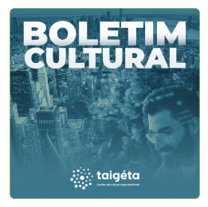

MATERIAIS
Materiais gratuitos
Alguns de nossos e-books para começar sua jornada de mudança cultural.
Algoritmo da Cultura - 5E
O algoritmo que mede a cultura organizacional a partir de dados e comportamentos, ajudando empresas a identificar e direcionar mudanças culturais.

Boletim Cultural - Toyota
Confira uma análise personalizada da cultura organizacional da Toyota, destacando o seu modelo Toyota Way e seus pilares de ordem, segurança e resultado.
Cultura com a CFR©
Apresentando a metodologia CFR (Culture For Results) da Taigéta, um modelo para você diagnosticar, modelar e gerenciar a cultura com foco em resultados.
É hora de colocar o
potencial das pessoas
em movimento

Boletim Taigeta da Cultura Organizacional
Receba periodicamente por e-mail.